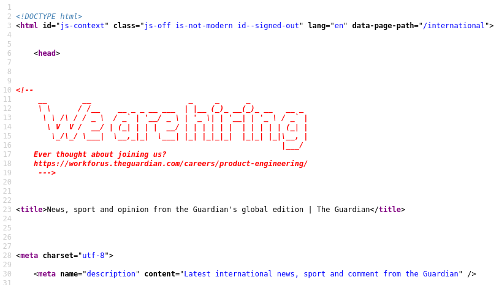
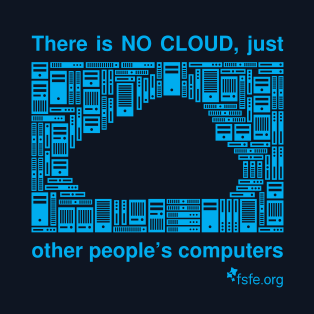

Guía Periodismo de Datos, UC3M
Table of Contents
- 1. Presentación
- 2. Introducción al Periodismo de datos
- 3. Datos y periodismo de datos
- 4. Leyes
- 5. Redacciones
- 6. Recolección y análisis de datos
- 7. Representación de datos
- 8. Herramientas
- 8.1. Actualizaciones
- 8.2. Interfaces de uso de software
- 8.3. Software esencial
- 8.4. Uso de herramientas o software libres
- 8.5. Emulador de la terminal
- 8.5.1. Cygwin
- 8.5.2. WSL
- 8.5.3. Virtualización y/o alternativas a Cygwin o la terminal de OSX
- 8.5.4. Linux
- 8.5.5. Terminal MacOSX
- 8.6. Git
- 8.7. Github
- 8.8. Buscadores
- 8.9. Las nubes
- 9. Visualización de información
- 10. Herramientas de visualización de datos
- 11. BASH
- 12. Herramientas de visualización de información
- 13. Perspectivas de futuro
- 14. ToDo
- 15. Preguntas
- 16. Bibliografía
1. Presentación
- Soy Adolfo Antón Bravo, doctor en Ciencias de la Información por la Universidad Complutense de Madrid.
- Mi recorrido por el Periodismo de datos comienza en 2013 cuando me encontraba realizando mi programa de doctorado y me tope con el periodismo de datos y Mar Cabra.
- He pasado por Medialab-Prado, el Grupo de Ingeniería Ontológica de la UPM y el CSIC.
- Podéis ver toda la información sobre emí en infotics.es donde suelo poner todo lo que hago.
- También soy @flowsta en Github, una herramienta que usaremos.
- Esta guía de la asignatura se corresponde con buena parte de lo que hemos dado durante las clases.
- La organización de la información no responde a un cronológico sino a la estructura propuesta por la ficha reina de la asignatura.
- Si tienes alguna duda, comentario o propuesta de mejora, puedes crear una issue.
- Si tienes alguna duda, comentario o propuesta de mejora, puedes crear una issue.
2. Introducción al Periodismo de datos
2.1. ¿Qué es el Periodismo de datos?
Algunos comentarios sobre el periodismo de datos:
- El periodismo de datos moderno, del que bebemos actualmente, nace en 2006-2008 con una combinación de factores: abundancia de software de código abierto, HTML5 y Open Data. Hablaremos de ello más adelante.
- The Guardian es uno de los medios pioneros del periodismo de datos moderno.
- Como es una disciplina nueva también es una disciplina contenedor. Fundamentalmente hay tres áreas implicadas en el periodismo de datos:
- El periodismo, y solo puede haber periodismo si hay investigación.
- Los datos, es decir, registros electrónicos que han de ser tratados por ordenador.
- La visualización de datos: desde la Web hasta el papel pasando por la estadística, las distintas visualizaciones o la infografía.
- El periodismo, y solo puede haber periodismo si hay investigación.
2.2. Periodismo de datos
Seguimos esta presentación que está en este repositorio de Github
2.3. Tres saberes implicados en Periodismo de Datos
A propósito de una pregunta sobre "¿quiénes somos, de dónde venimos y a dónde vamos?", recordamos los tres saberes implicados en periodismo de datos:
- Periodismo
- Visualización
- Datos
Los tres son importantes pero ojo que la visualización va más allá de la visualización como producto final. En la etapa de visualizar también realizamos análisis, aplicamos técnicas estadísticas, programas informáticos que hagan que de un gran volumen de datos seamos capaces de sacar hipótesis o conclusiones.
2.4. ¿Por qué tantas tecnologías y términos?
- Veamos, volvamos al principio. Estamos en Periodismo de Datos. Sí, podríamos tener una pequeña tabla, ir a un servicio de terceros y hacer un gráfico. Fácil. De hecho, lo haremos.
- Parémonos un momento en eso que dijimos del Computer Assisted Reporting, periodismo asistido por ordenador. Sí, esto es fundamental, debemos saber manejar un ordenador.
2.4.1. Programación literaria e investigación reproducible
- Ya en programación Donald Knuth, inventor del fundamental \LaTeX, pieza clave en la investigación reproducible, lo hizo pensando en el paradigma de la "programación literaria".
- Es decir, como vimos con HTML, todo lenguaje informático tiene "comentarios" sobre el código.
- Estos comentarios son útiles para recordarme por dónde voy, por qué he hecho tal cosa, si tal otra falló, lo que quiero hacer, etc.
- La programación literaria propone hacerlo "al revés". Es decir, escribir lo que quiero hacer y los trozos que sean código identificarlos como tal.
2.4.2. Content as Code
- Tanto Github como Markdown como otras tecnologías están alineadas con algo que se ha denominado content as code o "contenido como código".
- En el mundo del periodismo de datos se utiliza mucho Python con Jupyter; R con RStudio; Javascript con ObservableHQ.
- El uso de sintaxis simple nos permite reutilizar el texto, nuestro código, y también insertar código.
2.4.3. COPE
- En la radio pública de EE.UU. desarrollaron la estrategia COPE: Create Once, Publish Everywhere para reutilizar contenidos de las distintas emisoras.
3. Datos y periodismo de datos
- Periodismo de datos alude al uso de datos pero no hay que olvidar que estos datos son registros electrónicos
- El hecho de llamarlo "periodismo guiado por datos" o data driven journalism no debe menospreciar que lo importante es el periodismo.
- Pero hay que saber trabajar con datos como una parte más del trabajo periodístico.
- El Computer Assisted Reporting o periodismo asistido por ordenadores lleva funcionando en EE.UU. desde los 1950.
- ¡Para el Periodismo de Datos necesitamos datos!
- Muchas veces es complicado encontrarlos pero también hay muchos sitios donde buscar e investigar datos ya preparados.
- Cuando hablamos de datos no nos referimos solo a unos datos estructurados o a un conjunto de datos.
- Se tratan de registros electrónicos, donde puede haber datos estructurados pero también no estructurados, el texto y/o la web como datos, la música, las imágenes, los vídeos...
- E incluso nuestro comportamiento, tanto con las aplicaciones como con los dispositivos electrónicos.
3.1. Conocimientos previos
Se suele tener algún conocimiento informático de:
- El propio ordenador
- Algún editor de textos
- Otros programas
Pero además, más relacionados con esta asignatura, se suele saber algo de Wordpress, o de SEO o de Excel. ¿Qué son?
3.1.1. Wordpress
- No lo vamos a usar pero Wordpress es un CMS (Content Management System, sistema de gestión de contenidos).
- Tanto Wordpress como otros CMS funcionan con la arquitectura WAMP o LAMP, principalmente está última.
- LAMP responde a Linux, Apache, MySQL y PHP y es la combinación de las cuatro tecnologías implicadas en Wordpress.
- Cuando vemos una página en Wordpress estamos viendo el ordenador de alguien, sea una persona o una empresa. Ese ordenador va normalmente con el sistema operativo GNU/Linux.
- Para que ese ordenador sirva páginas web requiere un servidor web. Apache es el más utilizado en el mundo, es software libre también, como GNU/Linux, aunque con otra licencia. También se usa mucho NGINX.
- En el HTML de Wordpress se incluye el lenguaje de programación PHP (PHP Hypertext Preprocessor, un acrónimo recursivo, figura muy utilizada en el mundo del software) que es el que construye las páginas HTML haciendo las llamadas a la base de datos donde se almacenan los contenidos de Wordpress.
- MySQL (donde SQL significa Structured Query Language o lenguaje de consulta estructurada) es el servidor de la base de datos.
3.1.2. SEO
- SEO responde a Search Engine Optimization u optimización del motor de búsqueda.
- No tiene más relación con Wordpress que el hecho de que Wordpress se utiliza para hacer web y cualquier web suele querer ser encontrada por un motor de búsqueda. Lo veremos en otro momento.
3.1.3. Excel
- No vamos a usar Excel pero conviene que sepamos qué es y por qué.
- Hay quien confunde Excel con hojas de cálculo o tablas de datos pero Excel es, por un lado, un programa para visualizar datos tabulados; por otro, un programa donde se pueden utilizar funciones para trabajar con los datos tabulados; y finalmente, un formato de datos XLSX.
- Para trabajar con datos tabulados veremos más adelante distintas formas, preferiblemente libres y/o abiertas.
- La última X proviene de XML cuando en 2008 Microsoft Office convirtió sus formatos de archivo en formatos compatibles con XML.
- XML significa eXtensible Markup Language. Se utiliza mucho en la industria/administraciones públicas pero no vamos a utilizarlo, al menos de momento, a no ser que lleguemos a otra cosa que es el XPath para el scrapping.
- Básicamente, XML es como que cualquiera puede crear sus propios elementos HTML. Por eso se puede utilizar para organizar la información, los datos o los procesos y compartirlo, si se quisiera.
- Microsoft Office es software propietario y privativo, no permite el libre uso.
3.2. Lenguajes informáticos
Algunas de estas cosas suenan a lenguajes informáticos o lenguajes de programación pero, ¿son lo mismo?
- Los lenguajes informáticos son todos los que entiende o puede entender el ordenador (a través de software, claro).
- Dentro de los lenguajes informáticos están los lenguajes estructurados, como puede ser HTML, que sirve para estructurar documentos.
- Y también están los lenguajes de programación que sirven para programar acciones que haga el ordenador. Entre estos se encuentran Java, C, C#, Python o R.
- En la web se utiliza mucho JavaScript, es el que aporta la interactividad. Tampoco lo vamos a abordar pero algo veremos... ¡al menos saber que existe y qué es lo que hace!
3.3. Markdown
- Se trata de la lengua franca para la edición de textos en aplicaciones informáticas.
- La Web funciona con HTML, actualmente la versión 5: HTML5
- HTML está muy bien pero Dan Gruber pensó que tenía un inconveniente: era difícil de leer el texto de un código HTML.
- Por eso inventó Markdown. Markdown es dos cosas a la vez:
- Una sintaxis simple, muy simple.
- Un "parseador" o conversor de esa sintaxis en HTML
- Una sintaxis simple, muy simple.
- Así, en Github escribimos Markdown y Github lo muestra como HTML, pero si vemos el archivo fuente sigue siendo Markdown. Tiene truco, claro. Si le das a "ver código fuente" lo ves en HTML pero ese HTML no es el que modificas para que se vea un HTML u otro sino que lo que modificas es Markdown y luego se hace la conversión de nuevo... eso es porque hay una herramienta intermedia, un gestor de contenidos llamado Jekyll, que lo convierte.
- Markdown es tan simple que hay sitios donde no llega. Por eso desde el inicio se permite en Markdown usar también lenguaje HTML si lo necesitamos.
- También hay versiones de Markdown como Markdown BlackFriday o RMarkdown en R.
- Hay muchas guías de Markdown. Lo mejor es probar y aprender.
- Mi guía la podéis encontrar en Github y también como una web.
3.4. CSV
- Probablemente sabéis qué es Excel: un programa para visualizar datos tabulados.
- ¿Qué es CSV? Comma Separated Values o Valores Separados por Comas.
- Son herederos de los TSV, Tab Separated Values o valores separados por tabuladores.
- Tened en cuenta que el tabulador crea un espacio más grande (4 o 5 caracteres) frente al espacio de la barra espaciadora que deja uno. Los espacios pueden estar presentes en algunos datos, como un nombre o una dirección, pero los tabuladores no. Por eso se utilizaba esta separación para que el ordenador la interpretara como otro campo de la tabla.
3.5. Tipos de formatos de datos
Los tres tipos de formatos de datos más habituales son:
- *SV o valores separados por cualquier valor.
- JSON o JavaScript Object Notation, notación de objetos JS.
- XML o eXtensible Markup Language, lenguaje de marcas extensible.
3.5.1. XML
Los ficheros XML no los vamos a ver porque:
- Son más complicados de leer.
- Por tanto, es más complicado trabajar con ellos
3.5.2. JSON
- Son los ficheros que mejor funcionan con aplicaciones web.
- Utilizan la sintaxis de JS.
- Permiten más complejidad que los *SV, por eso son más complejos de leer.
3.5.3. *SV
- Normalmente serán llamados con terminación csv incluso aunque no utilicen comas para separar los valores.
- Son los más sencillos.
- Pero también los menos estandarizados.
- Los valores separados por comas se visualizan como una tabla simple con filas y columnas.
- La mayoría de los recursos disponibles en los catálogos de Datos Abiertos se encuentran en formato CSV.
- El portal de datos europeo dispone de más de 120 mil conjuntos de datos en formato CSV, siendo el formato que más abunda en este catálogo de Datos Abiertos.
- Por su parte, el catálogo nacional datos.gob.es cuenta con casi 14 mil datasets en formato CSV, siendo igualmente el formato mayoritario.
3.6. Tipos de datos
- Numéricos
- Cuando una celda tiene números es probable que esos datos sean numéricos.
- Pero no siempre ocurre ya que solo son considerados numéricos si queremos realizar operaciones matemáticas con ellos.
- Los números pueden corresponder a un identificador, que en este caso está compuesto por números.
- Por tanto, en este caso estos números no son datos numéricos sino string, "cadena de caracteres" o literales.
- Algunas aplicaciones reconocen automáticamente o pueden hacerlo los tipos de datos para realizar operaciones específicas con ellos.
- Esto suele mostrarse visualmente de alguna manera destacada, por ejemplo, poniendo esos datos en color verde.
- Tipos de datos numéricos
- integer
- números enteros, sin decimales. Atención si tienen el separador de millar porque es distinto en español (punto) que en inglés (coma). Algunos programas lo entienden según tu codificación del programa pero otras veces hay que indicarlo.
- decimal
- números con decimales pero --explicación corta-- pocos decimales y siempre el mismo número de decimales. Por cómo son tratados, son más lentos de procesar que los
float. - float or double
- números con decimales pero que pueden tener muchos decimales y/o variable en su longitud. Por cómo son tratados son más rápidos de procesar que los
decimal - date or datetime
- la forma más estándar suele ser la que sigue el esquema
YYYY-MM-DD, dondeYsignificaYear, y al ser cuatro tienen que ponerse cuatro cifras;MsignificaMonth, y al ser dos tienen que ponerse dos cifras; yDsignificaDayy al ser dos tienen que ponerse dos cifras. Fíjese que en este tipo de datos numérico se utiliza un guión para separar las unidades temporales, aunque hay veces que se separan con/, no es lo más habitual. Hay veces que se incluye también la horatime, a continuación de la fecha, o bien separada con unaTdeTimeo, simplemente, con otro guión, en la formaHH:MM:SS:2021-09-21-14:30o2021-09-21+14:30. Se suelen poner horas y minutos si no se necesitan los segundos, pero puede haber segundos e incluso décimas de segundos:2021-09-21T14:30:00.5. También se puede indicar la zona temporal añadiendo unaZal final que indica que se está en horarioUTC(Universal Time Coordinated... en realidad no está en inglés exactamente). Madrid está en UTC+2 en horario de verano y UTC+1 en horario de invierno por lo que, la fecha anterior se escribiría en Canarias así:2021-09-21T14:30:00.5Zpero en Madrid sería=2021-09-21T14:30:00.5+2=. El mapa con los husos horarios lo tenéis en la Wikipedia. El tema de las fechas se ha especificado tanto quizás porque ha generado unos cuantos problemas informáticos. Véase, por ejemplo, el problema del año 2000 que fue bastante comentado: CCFN TV, NatGeo, The Science Elf. Pero, ¿puede volver a pasar? ¡Sí! Ya tenemos el Year 2038 Problem por el registro de hora en 32 bits. La solución pasa por hacerla en 64 bits. Ver formatos de fecha y hora - period
- Algunas veces (duration data type de XML Schema) se utiliza también el tipo de dato de tiempo periódico que obedece al periodo de la muestra del dato, por ejemplo:
Pal inicio indica que se trata de un dato periódico.nYindica el número de años.nMindica el número de meses.nDindica el número de días.Tindica el comienzo de horas, minutos o segundos, según vayanH,nMonS- En este tipo de dato se pueden dar valores negativos para indicar mediciones aproximadas. Por ejemplo, si es
-P10Dindica un periodo menor a diez días.
- Cuando una celda tiene números es probable que esos datos sean numéricos.
- Strings
- Se denomina strings, cadena de caracteres, lenguaje natural, literales al texto normal.
- Se denomina strings, cadena de caracteres, lenguaje natural, literales al texto normal.
- Booleanos
- Representan dos valores de una lógica binaria.
- "Verdadero o Falso", "True or False", aunque también lo podríamos entender como "Sí o No", "0 o 1", etc.
- El nombre se debe a George Boole, "desarrolló un sistema de reglas que le permitían expresar, manipular y simplificar problemas lógicos y filosóficos cuyos argumentos admiten dos estados (verdadero o falso) por procedimientos matemáticos."
- Representan dos valores de una lógica binaria.
{kind=link}
4. Leyes
No hemos reparado mucho en ello pero existe una Ley de transparencia llamada realmente Ley 19/2013, de 9 de diciembre, de transparencia, acceso a la información pública y buen gobierno y por eso tenemos este portal de transparencia.
5. Redacciones
5.1. Debate sobre el término "periodismo de datos"
En buena medida, según se ha aplicado en uno u otro contexto, en una u otra redacción, ha significado una distinta acepción del periodismo de datos.
- Aquí y ahora hablamos de periodismo de datos, y está bien.
- Cuando empezó en Europa y EE.UU. en 2008 se denominó periodismo guiado por datos. Suele ocurrir en inglés al menos con los saberes que, cuando se realizan de otra manera, se traslada ese proceso al nombre. Así por ejemplo en los 1990' yo hice cursos de Diseño gráfico asistido por ordenador (del computer assisted graphic design), ya que hasta entonces se hacía "diseño gráfico" de forma analógica.
- La irrupción de los portales de datos abiertos hizo que se denominara Data Driven Journalism, aunque luego se acortó a Data Journalism, pero ambos términos conviven.
- En EE.UU., por ejemplo, el precedente del periodismo de datos es el precision journalism o periodismo de precisión.
- José Luis Dader, catedrático de la Facultad de Ciencias de la Información de la UCM y que fue profesor durante el programa de doctorado, nos contaba cómo estuvo en EE.UU. para aprender esa disciplina y, al traerla a España y traducir el libro de Philip Meyer pensar si "periodismo de precisión" era un término apropiado. Pensó en "periodismo matemático", por su rigurosidad, pero pensaba que no se entendía bien; pensó en "periodismo informático", pero se iba a malinterpretar; o "periodismo científico", pero se iba a confundir con el periodismo que habla de ciencia. Al final se quedó con el original "periodismo de precisión" que al menos no inducía a errores y sí que hablaba de algo nuevo, sin por ello dejar de crear polémica ya que pareciera que el resto del periodismo no fuera preciso! Lo cierto es que se denominó así en EE.UU. para oponerse a un periodismo del estilo de Truman Capote.
- Ese periodismo de precisión no era la primera vez que en los EE.UU. se utilizaban ordenadores en periodismo. Veremos más adelante tanto el caso de Philip Meyer como el de la CBS de 1952. Este y otros usos de los ordenadores dieron en llamar a este periodismo como Computer Assisted Reporting o periodismo asistido por ordenador. Esta denominación pervive en la actualidad.
- Hay otras denominaciones en EE.UU. como la que la comunidad de computer assisted reporters ha creado: News Nerdery o los frikis de las redacciones.
- En Inglaterra, por ejemplo, la comunidad de periodistas de datos se ha denominado Journocoders o perioprogramadores.
- Y en EE.UU. también una comunidad pionera fue la denominada Hacks and Hackers. Hacks significa "hachazos" y se refiere al martilletear de teclear en la máquina de escribir.
- En Argentina, Sandra Crucianelli sigue hablando de "periodismo de bases de datos", y no le falta razón pues finalmente, para trabajar con los datos, alguna "base de datos" has de tener... aunque el concepto de base de datos también ha evolucionado.
5.2. CBS News Election Coverage
El 4 de nombiembre de 1952 se produce por primera vez una retransmisión televisada a escala nacional (de EE.UU.). Presentada por Walter Cronkite acompañado de los pioneros de CBS News Edward R. Murrow, Charles Collingwood, y Eric Sevareid, intentan anticiparse a los resultados electorales de las elecciones presidenciales americanas en los que el demócrata aventaja al republicano por goleada.
Para ello utilizan una Remington Rand, un ordenador que predice justamente lo contrario:
5.3. Data Journalism is the New Punk

Figure 1: Portada de London Calling de The Clash homenaje a la portada del primer álbum de Elvis Presley
- Así definió Simon Rogers al periodismo de datos en el TEDxPanthéonSorbonne en noviembre de 2012
- Define el punk como algo muy importante para la juventud porque les permitía formar una banda solo con tener una guitarra y con tres acordes se podía hacer una canción.
- Lo que fue importante para la juventud de los 1970' puede representar ahora los datos: tienes tres conjuntos de datos y ya puedes hacer una historia interesante.
- Rogers quería escribir y ser periodista cuando tenía 6 años. Pero tenía miedo a las matemáticas.
- Sin embargo en el periodismo de datos necesitas tener conocimientos matemáticos, técnicos.
- Hay portales de datos abiertos, proyectos de liberación de datos, filtraciones como Wikileaks...
- También herramientas libres o abiertas como Datawrapper para crear visualizaciones.
- Con UK Riots se volvió a revisar el inicio del periodismo de precisión de Philip Meyer y sus Detroit Riots.
- Open Journalism
- Joe Strummer: "people can do anything".
6. Recolección y análisis de datos
6.1. Google dorks u operadores de buscadores
Al igual que en la terminal se utilizan operadores, en los buscadores se ha convenido en utilizar algunas palabras clave de una forma especial para restringir la búsqueda
6.2. HTML
- HTML es el acrónimo de HyperText Markup Language o lenguaje de marcado de hipertexto.
- Es uno de los lenguajes, el básico y principal, que se utiliza en la Web.
- Es un lenguaje estructurado de marcas expresado en los signos
<>. - Dentro de las marcas se sitúan los elementos HTML como por ejemplo
pde párrafo oh1de header 1, algo así como el título o encabezamiento principal. - Conviene no confundir marcas con elementos.
- HTML es un lenguaje informático pero no es un lenguaje de programación.
- En un navegador (me refiero a Firefox, Chrome o derivados) si pulsamos el atajo de teclado
C-u(Control + u) accedemos al código fuente de la página. - Probad con una página de un medio internacional como The Guardian que además es referente como pionero del periodismo de datos moderno con el equipo del Datablog en 2008 compuesto por Simon Rogers y Paul Bradshaw (ya hablaremos de ellos en próximas clases).
- Lo que sale entre las marcas
<!--y-->son comentarios de HTML, es decir, contenido que aunque está en el codigo fuente, en el HTML, no se visualiza. Esto es habitual en todos los lenguajes informáticos, unos caracteres reservados para que el navegador/visualizador del HTML, no interprete el contenido que está a continuación. Si no llegas aquí no puedes saber que quizás seas la próxima persona a la que contraten.

Figure 2: We are Hiring!
6.3. URL
- URL o Unified Resource Locator o localizador de recursos uniforme es la dirección web.
- Como dice Mozilla.org, la URL junto con el hipertexto (expresado en el HTML, aunque de esto exactamente no hemos hablado todavía) y HTTP son los conceptos claves de la Web.
- La Web es una telaraña mundial, uno de los servicios de red de Internet. Sobre esta web lo que encontramos son "recursos", y a eso elude la URL.
- Cada URL valida apunta a un único recurso.
- Los recursos que normalmente conocemos son páginas web, pero también pueden ser documentos CSS, imagenes, JS, archivos de datos... cualquier archivo disponible en un servidor web.
En una URL se pueden identificar 3 partes fácilmente. Veamos este ejemplo del The Guardian: https://www.theguardian.com/world/2021/sep/14/taliban-governor-of-helmands-message-to-west-come-back-with-money-not-guns
https://, que indica el protocolo usado,httpsen el dominio que sea. La separación entre protocolo y dominio se realiza con://.- El dominio
www.theguardian.com, es decir, lo que va entre://y la primera/. El dominio se lee de derecha a izquierda en orden de importancia..comes el TLD, Top Level Domain o dominio de primer nivel. Una entidad lo gestiona y esa u otra que revende el servicio ha alquiladotheguardian.comal medio inglés. La última (recordad, de derecha a izquierda)wwwes un subdominio detheguardian.com. A efectos de la Web o de funcionamiento, daría igual que no estuviera pero es también una forma de honrar al proyecto de Tim Berners Lee WWW, World Wide Web o gran telaraña mundial; y es también una forma de organizar contenidos o cosas que sirves a través de tu dominio. Por ejemplo, si tienen un servidor de correo, quizás se llameimap.theguardian.com. Estos subdominios sirven para identificar por los humanos los servicios. - La estructura de carpetas del servidor web, todo lo que hay a la derecha de la barra inclinada después de
.com, es decir,/world/2021/sep/14/taliban-governor-of-helmands-message-to-west-come-back-with-money-not-guns. Cuando digo "estructura de carpetas del servidor web" es porque no tienen por qué corresponderse con una estructura de carpetas reales. Probablemente solo lo último, el nombre del artículo, se corresponda con una carpeta.
6.4. Qué es Internet
- Además de la mencionada definición concisa y precisa de "una red de redes", Internet funciona gracias a los protocolos TCP/IP.
- TCP responde a Transmission Control Protocol o protocolo de control de la transmisión.
- IP responde a Internet Protocol, os resultará más familiar porque al estar conectado a una red como es una Intranet el router nos tiene que dar una dirección de la red local, una IP.
- En una red TCP/IP hay unos 65500 puertos de escucha o de comunicación posible. La Web utiliza uno de ellos al menos, el 80.
- Hay otros servicios como el correo electrónico o la mensajería instantánea que utilizan otros puertos.
- Es cierto que se puede acceder a servicios de correo electrónico y mensajería instantánea por la Web, eso es porque las webs también pueden ser webapps o aplicaciones web. Esas aplicaciones conectan con los servicios de correo electrónico o mensajería instantánea que operan en los otros puertos y nos los muestran en un entorno web.
- Actualmente funcionamos con la versión original del protocolo, la denominada IPv4, que permitía hasta 4.300 millones de direcciones. Como se vio que se iba a quedar corto se empezó a trabajar en la versión IPv6, la cual actualmente funciona también pero conviven ambas. Este artículo de NordVPN lo explica muy bien.
6.5. HTTP
- HTTP responde a HyperText Transmission Protocol o protocolo de control de la transmisión.
- Es como funciona la web, un protocolo muy simple pero no por ello limitado, al contrario.
Cuenta con 4 acciones o métodos posibles:
- POST, publicar o crear. Es cuando se crea un documento nuevo.
- GET, obtener o bajarse. Es lo que hacemos cuando vemos una página web, solicitamos una copia de la web al servidor.
- DELETE, borrar el documento.
PUT, actualiza un documento ya existente.
HTTTP es una de las APIs más sencillas y conocidas. API significa Access Programming Interface o interfaz de programación de acceso, es algo así como los códigos para comunicarse con una web.
- HTTP es una API universal pero luego cada recurso puede tener la suya propia. Por ejemplo, Twitter tiene su propia API y así ocurre con muchos recursos que tienen muchos contenidos que ofrecen de maneras diversas.
- Si recordáis estas cuatro acciones que permite HTTP os aseguro que tenéis mucho ganado en relación con el uso que vais a hacer de la Web.
- En HTTPS, la S es de "segura" y ahora es el estándar por defecto. No os fiéis de una página que no lo tenga, aunque tampoco existe el 100% seguro.
6.6. Dominios
- Los dominios están ahí para evitar tener que sabernos la dirección IP del servidor donde está alojada la página web que queremos visitar.
- Cuando escribimos el dominio en el navegador el ordenador consulta con el servidor de nombres de dominio DNS (/Domain Name System) e indica en qué dirección IP se encuentra alojada la web. - Esto es una petición GET de HTTP.
7. Representación de datos
7.1. The mother of all demos
Figure 3: 1968 a research center for augmenting human intellect
- Es como se conoce a la presentación realizada por Douglas Engelbart en los Xerox Labs de Palo Alto en 1968.
- Los Xerox Labs dieron forma a las interfaces gráficas que luego popularizaron Mac o Windows.
- Pero este nombre es posterior, de 1994.
- Entonces se llamó "Un centro de investigación para aumentar el intelecto humano". Formaba parte de la conferencia de Fall Joint Computer en el Brooks Hall en San Francisco.
- El proyecto fue resultado del trabajo realizado en el Augmentation Research Center del Instituto de Investigación de Stanford.
En esta demostración de las tecnologías experimentales se presentan varios hitos:
- Un sistema operativo denominado NLS
- Uno de los primeros ratones.
- Sistema de videoconferencia
- Sistema de teleconferencia
- Hipertexto
- Procesamiento de textos
- Hipermedia
- Archivo de vinculación dinámica
- Control de revisiones (versiones)
- Editor en tiempo real colaborativo
7.2. Entidades HTML
- Cuando quieres mostrar caracteres que no son los propios de ASCII como puede ser una Ñ se deben usar las entidades HTML.
- En HTML estos caracteres que no son los comunes se tienen que representar con un código hexadecimal.
- Tened en cuenta que la codificación ASCII (American Standard Codification for Information Exchange, codificación americana estándar para el intercambio de información) cubría solo los caracteres habituales del alfabeto inglés.
- Por tanto, ni la
ñni las tildes están ahí. Para representar estos caracteres se puede hace a través de entidades HTML o bien de código hexadecimal. - Se pueden usar ambos pero las entidades HTML se han hecho para que sean más fáciles de recordar.
- Eso sí, no cubren todos los caracteres y, en el resto de casos, hay que poner el código hexadecimal.
Las entidades HTML son un conjunto de caracteres o string que empiezan por un ampersand & y terminan con un ; punto y coma. Por ejemplo, el carácter á se escribe á; el carácter é se escribe é, etc;
Las entidades HTML también nos sirven para conocer que en todos los lenguajes informáticos existen los caracteres reservados, es decir, caracteres que no podemos usar tal cual porque el lenguaje los entiende de una manera especial. Como en HTML el carácter de < menor que es el inicio de una etiqueta, si queremos poner una expresión matemática del tipo 4<6, cuatro es menor que 6, habrá que poner la entidad de ese carácter: 4<6, donde < corresponde al carácter < y donde lt viene de lower than.
Esto ocurre con el propio carácter de ampersand. Si queremos usarlo y que HTML no lo entienda como el inicio de una entidad HTML, hemos de poner la entidad del ampersand. Así, la empresa Ernest&Young se pondría en HTML como Ernest&Young, donde amp proviene de ampersand.
7.3. Caracteres reservados de la SHELL
Como cualquier otro lenguaje informático, los dialectos de la Shell (Bash o zsh, que son los que usamos) tienen también caracteres reservados. Por tanto, si los queremos usar debemos "escaparlos" para que no se entiendan como tales.
Según la API de Bash que hemos usado:
>- sirve para enviar la salida estándar de un comando (STDOUT o standard output) a un archivo que crea en el acto o sobreescribe si ya existiera.
>>- sirve para enviar la salida de un comando (STDOUT) al final de un archivo si existe y, si no, lo crea.
|- sirve para enviar la salida de un comando (STDOUT) a un comando (como STDIN, por standard input) para que lo interprete.
Así, por ejemplo, si queremos decirle a echo que 6 > 3, seis es mayor que tres, debemos escapar el carácter porque si no lo que hará echo será decir 6 y esa salida la enviará a un archivo de nombre 3 que contendrá 6. Podéis probarlo.
Para escaparlo podemos hacer dos cosas (siempre se pueden hacer varias cosas).
- Una es propia del comando
echo, y es entrecomillar todo el texto para que entienda que todo es parte de la cadena de caracteres ostring:echo "6 > 3". - Otra es escapar solo el carácter, y eso en la shell se hace con el carácter
\:echo 6 \> 3
7.4. nano
Dos cosas hemos realizado con nano para que su uso sea mejor:
- Primero comprobad que tenéis un archivo de configuración de
nanoen vuestraHOMEconls ~/.nano* ~/nano*. Si sale algo, echad un vistazo si se trata de.nanorc. - Tenéis que fijaros si tenéis comentadas o escritas dos opciones:
set softwrapyset linenumbers. Escribidlo si no lo tenéis, guardadlo y salid. La próxima vez que entréis debéis tener ya las dos opciones activas.
8. Herramientas
8.1. Actualizaciones
Importante en este punto recordar dos cosas:
- Suele ser mejor tener las últimas versiones estables de un software. Pero no es una regla fija, hay situaciones diversas.
- Sin embargo, a veces, todavía se puede tener versiones antiguas siempre que estén soportadas, es decir, quienes hacen ese software se aseguren de estar probando que todavía funciona.
- Cuando el software deja de estar soportado empieza a recaer la responsabilidad exclusivamente en nosotrxs. Eso es lo que ocurrió, por ejemplo, cuando Windows dejó de soportar primero XP y luego W7. También ocurre en MacOSX y en cualquier otro software.
8.2. Interfaces de uso de software
Hay tres tipos de interfaces aunque hemos visto dos:
- CLI de Command Line Interfaces o interfaces de línea de comandos.
- GUI de Graphical User Interfaces o interfaces gráficas de usuario.
- Las de los móviles, capacitivas.
8.3. Software esencial
[ ]Terminal CLI: para casi todo.[ ]Navegador: Firefox y/o Chrom*. Opera también puede acompañarnos porque va bien, respeta los estándares y tiene integrada una VPN (Virtual Private Network o red privada virtual).[ ]Editor de textos:nano[ ]Github: organización, documentación, trabajo colaborativo, publicación web.
8.4. Uso de herramientas o software libres
Cuando se habla de herramientas libres, de software, se refiere al hecho de que tengan licencias de software libres y/o abiertas.
- Sin abordar una vieja polémica entre software libre vs software de código abierto, hablamos aquí de todas ellas como un conjunto.
- Tened en cuenta que el software, en España/Europa, tiene consideración de obra inmaterial y tiene los mismos derechos que el Copyright de las obras escritas.
- Cuando escribimos no hace falta señalar el Copyright, lo tenemos por ley por defecto, de manera predeterminada.
Se pueden resumir los usos sobre una obra inmaterial en cuatro:
- Uso. Lectura de un libro o lectura de un software.
- Distribución. Dejar prestado el libro, texto o software.
- Modificación. Poder adaptar el texto, libro o software.
- Redistribución. Poder distribuir esa adaptación
El software libre y las licencias Creative Commons (utilizadas en producción cultural) "juegan" con esos derechos del Copyright para cederlos.
Por ejemplo, eldiario.es tiene una licencia Creative Commons BY-NC, es decir, se puede usar su contenido pero hay que citar su proveniencia y autoría (BY) pero no se puede hacer esto de forma comercial (NC, Non Commercial).
Hay otras licencias como las consideradas "AntiCopyright" de BSD ya que solo con mencionar la proveniencia permitían la adaptación y redistribución total de las obras derivadas. Esto es lo que ocurrió con parte del sistema operativo MacOSX que está basado en OpenBSD (como siempre, en los resúmenes se pierden detalles importantes, en StackExchange hay un hilo sobre esto).
Con el software libre no solo se pueden hacer las cosas que el software permita sino que, si avanzamos en el conocimiento del propio software, podemos participar de su creación.
8.5. Emulador de la terminal
- En Windows hay que descargarse Cygwin. También se puede instalar un subsistema Linux en Windows https://docs.microsoft.com/en-us/windows/wsl/about
- En MacOSX hay que descargarse y activar XCode. En MacPorts hay una guía pero seguro que hay otras.
8.5.1. Cygwin
- Se puede descargar en https://www.cygwin.com/
- Emulador de la terminal POSIX en Windows
- Ofrece un cojunto de herramientas y programas que emulan una distribución Linux en Windows.
- Tiene desventajas conocidas: instalación, actualización, usabilidad de la instalación...
- ¡Atención! Una vez que lo descargáis y lo instaláis, no tiréis el instalador ya que es necesario para su actualización.
- La primera vez que lo usamos descargamos
lynx,wget,openssl,ca-certificates. - Para no tener que correr manualmente el instalador cada vez que queremos actualizar Cygwin con algún paquete/programa, usaremos
apt-cyg
8.5.1.1. Mirrors
- Esto es una herencia de los principios de Internet y la Web. Los mirrors son espejos que tienen ese software para que pueda descargarse sin problemas.
- Tened en cuenta que al principio las conexiones eran muy lentas. Algunas páginas con mucho contenido o contenido pesado, como puede ser el software, tenían mirrors, es decir, espejos, copias de ese contenido en otras para no saturar la original.
8.5.1.2. ¿Qué es Cywgin?
En su página web pone: What is it?
- Un conjunto amplio de herramientas GNU y de código abierto que ofrecen una funcionalidad similar a una distribución Linux en Windows.
- Una librería DLL (Dynamic Link Library) para Windows que ofrece buena parte de las funcionalidades de la API de POSIX.
- POSIX (Portable Operating System Interface o interfaz portable del sistema operativo) es una familia de estándares especificados por la IEEE Computer Society (Institute of Electrical and Electronics Engineers) para mantener la compatibilidad entre los sistemas operativos.
8.5.1.3. apt-cyg
- Cygwin es una herramienta muy potente para Windows pero muy tediosa de utilizar.
- apt-cyg es un gestor de paquetes de Cygwin que funciona en línea de comandos.
- El nombre proviene de ser como un apt para Cygwin.
Un APT (Advanced Package Tool) es un conjunto de herramientas para manejar los paquetes --programas-- de los sistemas Debian GNU/Linux. Se ha hecho muy popular su funcionamiento y otros sistemas operativos lo han imitado porque permite:
- Instalar programas.
- Desinstalar programas.
- Actualizar programas.
- Resolver dependencias de los programas de forma automática.
Sin apt-cyg, cada vez que queremos instalar algo hay que abrir el programa de instalación de Cygwin. - Con apt-cyg conseguimos instalar o actualizar programas que usamos en Cygwin desde la propia consola de Cygwin.
- Instalación de apt-cyg
Para instalarlo, tal como cuentan en su página web, usamos dos líneas de comandos:
lynx -source rawgit.com/transcode-open/apt-cyg/master/apt-cyg > apt-cyg install apt-cyg /bin
La primera línea dice que ejecutará
lynxcon la opción-sourcepara descargar el código fuente de la páginarawgit.com/transcode-open/apt-cyg/master/apt-cygy ese texto lo envía con>al archivoapt-cyg.
En este momento y en el directorio/carpeta/ruta donde estemos, creamos un archivo con nombre
apt-cygque contiene el texto del código fuente de esa URL, que es un script para usar Cygwin e instalar programas sin correr manualmente el instalador.
Para comprobar que está hacemos un
ls, un comando para listar los contenidos de la carpeta/directorio.
Si está, pasamos a la siguiente línea. Con
installinstalamos el archivoapt-cyg, que es un programa, en la carpeta bin, que es donde se ubican los programas o binarios.
Si no ha dado error será que lo tenemos. Para probarlo escribimos
apt-cyg install wget, que es la instrucción para instalar el programawget, una herramienta para descargar archivos que usa precisamenteapt-cyg
Y :smiling-imp: recordad también que lo que hay antes de esas dos líneas en la página de github es un tutorial. Hay que leérselo.
8.5.1.4. Resumen Cygwin en 4 pasos
- Descargo el programa de cygwin.com
- Al instalarlo, incluir los programas
lynxywgetque luego va a usarapt-cyg. - Instalar apt-cyg de https://github.com/transcode-open/apt-cyg
- Instalar programas con apt-cyg, por ejemplo,
git.
8.5.1.5. Cambiar la home en Cygwin
- Queremos cambiar la home de Cygwin.
- Este es un juego divertido que la gente de Mac o GNU/Linux no necesita hacer, en principio.
- Recordemos que cuando digo
homeme refiero al directorio del sistema de archivos donde se encuentran mis archivos personales, es decir, lo que en un Windows o Mac es mi espacio del ordenador y a partir de ahí cuelgan las carpetas deEscritorio,Descargas, etc. - Por defecto, la home del usuarix de Cygwin es el directorio de instalación del programa que monta una estructura Unix con ruta
/home/nombre-usuarix/. - Esto lo vemos cuando arrancamos el programa y escribimos (le preguntamos)
pwd(imprime el directorio de trabajo) y devuelve una ruta que es esa. - Para ver el árbol de directorios de Cygwin o Mac o Linux, podéis hacer
tree -L 1 /. El comandotreemuestra el árbol de directorios y archivos. Con la opción-L 1(Lde level o nivel) muestra un nivel del árbol desde el punto (el argumento/) que le hemos dicho, en este caso la raíz, principio o núcleo del árbol de directorio representado por una/barra. - Cygwin instala, por defecto, el espacio de usuario en una parte del propio programa, en
/home/. Lo que queremos hacer es que tenga comohomeel espacio de mi usuario de Windows. - Para disfrutar de
Cygwiny acceder al espacio de quien usa el ordenador de Windows, una opción es modificar la variabledb_homeen/etc/nsswitch.confcon nuestro editornano. - Pero antes...
8.5.1.5.1. Antes de cambiar la home
En la home de Unix se crean unos archivos por defecto:
.bashrc, donde se encuentra la configuración deBASH..bash_profile, donde se encuentra la información del perfil de lxs usuarixs deBASH..bash_history, donde se almacenan los comandos que utilizamos.
Tanto si estos archivos contienen información útil como si no, antes de cambiar la home, cópialos al directorio que va a ser el nuevo directorio de trabajo, es decir:
cp .bash* /cygdrive/c/Documents and Settings/usuarix/.
8.5.1.5.2. ¿Quién soy yo?, ¿cuál es mi usuarix?
- Hay un comando que nos lo dice,
whoami. - Dado que Cygwin ha copiado el nombre de Windows, esto funciona también aquí.
whoami
8.5.1.5.3. Editemos nsswitch.conf
- A la hora de escribid nombres de archivos, de directorios o rutas completas, recordad que la tecla de tabular es vuestra amiga :smiley-cat:
- Entonces, escribimos
nano /etc/nsswitch.conf - Y al final del archivo, abajo, escribimos
db_home: windowso biendb_home: /%H. - Guardamos y salimos (o salimos y guardamos :recycle:)
8.5.1.5.4. ¿Hashtag? ¿Qué es la almohadilla?
- Tened en cuenta que en los archivos de configuración de la
Shell, la almohadilla#que aparece al principio de línea significa que la línea está comentada, es decir, que no la va a leer el programa que quiera leerla para hacer algo. - En Markdown el mismo carácter es el equivalente del elemento
h1de HTML o "encabezamiento de primer nivel". - Así que os pueden quedar varias líneas comentadas, incluso contad lo que habéis hecho en una línea comentada, para que cuando volváis a este archivo sepáis por qué esta línea es así:
# Ahora modifico la línea de la variable db_home
8.5.1.5.5. ¿No fue posible?
Si a alguien no le funciona, puede proponer este otro método que proponen en esta página:
mkpasswd -l -p "$(cygpath -H)" > /etc/passwd
8.5.1.6. Admin en Cygwin
Algunas utilidades de administración en Cygwin:
uname -acygcheck -c pythoncygcheck -ccygcheck --check-setup
8.5.1.7. Resolver los problemas de Cygwin
Encontrar problemas no es malo, podemos aprender mucho de su resolución. En lo que respecta a git se recomienda seguir el siguiente procedimiento:
- Quitar
gitconapt-cyg remove git. - Instalar
gcc-core,libcurl4,libcurl-devel,openssl. - Recordad que se pueden buscar estos paquetes con
apt-cyg searchall lo-que-queramos-buscar. - Instalar
gitconapt-cyg install git
8.5.2. WSL
- Es una terminal de un sistema operativo GNU/Linux virtualizado por M$ para W10.
- Había que iniciar una PowerShell con permisos de administración y ejecutar
wsl -installe instala una terminal de Ubuntu GNU/Linux. - Si en vez de Ubuntu se quiere otra distribución, se puede especificar con
wsl -install -d NombreDistribución, donde una puede ser "Debian"
8.5.2.1. neofetch
8.5.3. Virtualización y/o alternativas a Cygwin o la terminal de OSX
En los casos de problemas con Windows se puede optar por probar estas alternativas:
- Git bash
- En la página oficial de git se puede descargar una terminal para trabajar con git.
- Se trata de una terminal basada en Msys2
- Viene con git y otros comandos preinstalados.
- Si se quiere utilizar como terminal multipropósito, se recomienda aprender de MSYS2.
- Lo "malo" que tiene es que realiza la conexión con Github "muy fácil", para aprender no es lo mejor pero para usarlo va como la seda.
- En la página oficial de git se puede descargar una terminal para trabajar con git.
- Msys2
- En su página explican que es otro proyecto de terminal multipropósito llamada Mintty que tiene cosas de Cygwin pero es independiente.
- A efectos de uso, una diferencia fundamental es la gestión de paquetes que no se realiza con apt-cyg o el software de instalación (setup) sino con
pacman, un modelo que nace en la distribución de GNU/Linux ArchLinux. - Para aprender un poco de cómo gestionar (buscar, instalar, actualizar, borrar) paquetes se puede ir a https://www.msys2.org/docs/package-management/ o https://www.lifewire.com/using-the-pacman-package-manager-4018823
- En su página explican que es otro proyecto de terminal multipropósito llamada Mintty que tiene cosas de Cygwin pero es independiente.
- Github CLI
- Github también provee una terminal CLI para relacionarse con Github: https://cli.github.com/
- A favor tiene su aspecto cuidado y fácil de utilizar.
- En su contra que solo sirve para Github tanto por su conexión como por las acciones personalizadas.
- Github también provee una terminal CLI para relacionarse con Github: https://cli.github.com/
- VirtualBox
8.5.4. Linux
Además de apt en Debian y derivados o pacman en Archlinux, Brew también se puede instalar en Linux.
8.5.5. Terminal MacOSX
- La terminal es una aplicación que encontramos disponible en "Utilidades -> Terminal" pero, de un tiempo a esta parte, está capada y no se puede utilizar con todo su potencial.
- Para ello requiere activar Xcode. Esto lo conseguimos por dos vías posibles. En ambos casos debemos tener cuenta de Apple.
- O bien descargamos xcode, que son muchos Gb.
- O bien en la página de developer de MacOSx buscamos "Command line tools for Xcode", que es menos de medio Gb.
- En cualquier caso, leed bien las instrucciones para la instalación de estos enlaces y no tengáis miedo a las advertencias de Mac sobre lo que vas a hacer pues lo único que vas a hacer es usar algo que tu ordenador es capaz de tener.
- Una vez tenemos Xcode, instalamos
brewque es un gestor de programas para la terminal de Mac, algo así como elapt-cygde Cygwin.
- En cualquier caso, leed bien las instrucciones para la instalación de estos enlaces y no tengáis miedo a las advertencias de Mac sobre lo que vas a hacer pues lo único que vas a hacer es usar algo que tu ordenador es capaz de tener.
8.5.5.1. Brew
- Brew se trata de un gestor de programas en MacOSX.
- Hay una alternativa llamada macports.org, no son incompatibles, por si alguien se anima a experimentar.
- Sirven para instalar programas que se usan en la Terminal.
- La instalación fácil hasta hace poco está en la página de brew.sh
- Copiamos esta línea
/bin/bash -c "$(curl -fsSL https://raw.githubusercontent.com/Homebrew/install/HEAD/install.sh)"y la pegamos en la terminal. - Sin embargo esto ha cambiado sensiblemente porque MacOSX ha dejado de utilizar
BASHcomo el dialecto que entiende la terminal y ahora utilizaZSH. Aunque son dialectos varían en algunas cosas. En el curso usaremosBashpor lo que recomiendo hacer lo siguiente: - spirosfromlondon nos cuenta que tendremos que lanzar
brew updatey luegobrew install bash. Comprobamos conbash --versiony para que MacOSX no olvide esto, editamos el archivo~/.bash_profileconnano, por ejemplo y añadimos esta línea:export BASH_SILENCE_DEPRECATION_WARNING=1. - Habrá que añadir también brew a
PATH - Luego ya podemos instalar programas. Por ejemplo,
wgetconbrew install wget. - Quizás surjan otros problemas, como este... no dudéis en comentarlos.
- Si quisierais seguir con
zshy no os da problemas, genial.
8.5.5.1.1. Problemas con Brew
- Aquí hablan de algunos problemas que se han encontrado.
- Ha habido personas con problemas para instalar XCode. Parece que os pide actualizar software y/o sistema operativo para que tengáis compatibilidad con el XCode.
- Mirad antes si disponéis de otras versiones anteriores de XCode que valgan para vuestra versión del sistema operativo y así elegís entre actualizar todo, con lo que implica, o bien simplemente instalar una versión de XCode compatible con vuestra versión del sistema operativo.
- Hay gente con MacOSX que no ha podido instalar XCode porque le sale un aviso de que no tiene espacio en disco.
- Una opción es mirar el tamaño de nuestro disco duro. Se puede hacer por aplicaciones gráficas o bien con el comando
df:
df -h
Se puede usar duckduckgo para hacer una búsqueda, como por ejemplo xcode fail install disk space, lo cual se considera una inteligente. Entre sus resultados:
8.6. Git
Git se utiliza en proyectos de software. Es un programa para el trabajo colaborativo y distribuido.
- También se utiliza en proyectos de periodismo y visualización de datos.
- Hay una visión del periodismo de datos denominada "Content as Code" que encaja con este uso.
- En cualquier caso, tiene muchas ventajas. Los únicos inconvenientes pueden venir de no conocer bien cómo funciona.
- Permite ramas de los proyectos que luego pueden integrarse.
- Permite volver a momentos concretos de los proyectos.
- Nos acostumbra a trabajar comentando lo que hacemos.
- Nos habituamos a un software cliente/servidor.
- Permite más de un servidor.
- Lo crea Linus Torvalds, el mismo creador del kernel Linux (de los sistemas operativos GNU/Linux) precisamente para el desarrollo del kernel, de esta parte fundamental del software de un sistema operativo.
8.6.1. Instalación
Instalamos git en el ordenador.
- En cygwin, con
apt-cyg install git - En linux, con
sudo apt install git - En mac, con
brew install git
8.6.2. Problemas en Windows: el Antivirus
- Se han detectado problemas o bien al instalar git o bien al clonar el repositorio luego.
- Cuando estéis con estas cosas desactivar el antivirus o permitidle una excepción de cygwin porque si no no funciona bien.
8.6.3. remote-https
A veces pasa que hacemos un git pull y sale esto:
git: 'remote-https' is not a git command. See 'git --help'.
Hay que comprobar que tenemos las librerías adecuadas para que funcione git con https:
libcurl4openssl-dev
8.7. Github
Os presento a Github. Aunque lo ha comprado Micro$oft y ha perdido mucho de su glamour es una buena forma de habituarse a trabajar con un software de control de versiones que permite la colaboración y además, Github ofrece algunas posibilidades que hacen que lo vayamos a utilizar bastante.
- Se trata de una de las herramientas más usadas en periodismo de datos.
- Github es la suma de git, el software, y hub, el espacio montado por GitHub..
- Github es un espacio donde podemos alojar los repositorios o proyectos git.
- Se pueden crear repositorios, algo así como una carpeta de nuestro sistema de ficheros del ordenador.
- Ahora también se pueden crear proyectos pero, de momento, creamos un repositorio.
- Hay que crear una cuenta :abc:
- En GitHub y en lo que escribamos no utilizaremos M$Word sino otros programas libres y/o abiertos y la sintaxis simple Markdown.
- Un truco/consejo: cuando queráis buscar algo en Github añadid el adjetivo "awesome" (fantástico, chulo, maravilloso) a la palabra que buscáis. Por ejemplo, buscad "awesome data" para buscar datos.
8.7.1. Tres piezas
Dado que git nace de los proyectos de software conviene saber qué tres piezas suelen tener estos proyectos, aunque a veces esté todo resumido en el propio archivo del software:
- El archivo
README, nombrado en mayúsculas por herencia de las viejas terminales. Se utilizaría una sintaxis simple para explicar de qué va el software, cómo surgió, quién/es están detrás de él, cómo se usa, etc. - La licencia del software.
- El propio software
Todo esto se puede poner en tres archivos separados, en dos o en uno solo.
8.7.2. Nombres de archivos y carpetas
- Conviene --en la asignatura es obligatorio-- no usar espacios en blanco para los nombres de archivo y directorios/carpetas :boom:
- Recordamos que en Github si creamos un archivo hemos de incluir la extensión
mdpara que lo trate como un textomarkdowny por tanto lo procese correctamente. - En Github los nombres del primer archivo se llaman
README.mdpara que lo leas (¡léeme!) y de alguna forma como homenaje a los archivos del software que se leía en pantallas en blanco y negro donde se prefería las mayúsculas para la mejor lectura. - Hay que nombrar tanto los archivos como las carpetas en minúsculas y separando las palabras con guiones medios, es decir:
esta-es-una-carpetayesto-es-un-archivo.md. - Hay otras formas posibles pero es importante usar siempre el mismo método.
8.7.3. Clonar repositorio
- Podemos clonar cualquier repositorio de Github con
git clone url-repositoriopero el funcionamiento varía de uno nuestro a uno ajeno. - Para clonar uno ajeno, si queremos interaccionar con el mismo, lo que habría que hacer sería un
forken Github. De esa manera crea una copia del repositorio ajeno en nuestra cuenta. - Con
git clonese crea una carpeta con el nombre del repositorio que tiene la configuración para conectarse con el repositorio remoto. - Luego con
cdnos situamos dentro del repositorio. - Ahora con
nanoo nuestro editor favorito cambiamos algo, guardamos, cerramos.
8.7.4. Actualizar repositorio
En tres plazos:
git add nombre-archivo-cambiadoy/onombre-carpetaso solo un punto.si queremos añadir todo.git commit -m "comentario del cambio", aquí estamos firmando el cambio.git push main origin, para subirlo a la ramamaindel repositorio remoto que hemos definido comoorigin
Si queremos ver qué hemos definido como repositorio remoto se puede usar git remote -v.
8.7.5. Git push -f
A veces puede pasar que actualicemos el repositorio remoto y también el local, independientemente. Entonces, hacemos git push o git pull y nos salta un aviso.
Si el contenido remoto no es importante y en local lo tenemos actualizado, debemos hacer git push -f. Por su parte, si el contenido remoto es el actualizado, haremos git pull.
8.7.6. Ayuda de Github para crear un repositorio
Github da varias opciones de creación de un repositorio. La que más me gusta para aprender es la que tienes que hacer muchas cosas manualmente.
Si no marcamos "crear un Readme" ni "poner una licencia" ni nada, el repositorio remoto estará vacío y da una serie de instrucciones para que lo hagas en local y lo conectes con el remoto:
echo "# Proyecto de ..." >> README.md git init git add README.md git commit -m "primer commit" git remote add origin https://github.com/cuenta/nombre-repositorio git push -u origin main
8.7.7. No nos reconoce
Si no hemos usado todavía git y es la primera vez en nuestro ordenador tendremos que configurarlo, tenemos que identificarnos.
- Suele salir un aviso
Author identity unknown, es decir, se desconoce la identidad de quién eres paragit, para firmar esecommity luego subirlo al servidor que vas a utilizar. - Suele añadir, además
*** Por favor, cuéntame quién eres - E incluso te sugiere que pongas dos instrucciones en la terminal:
- Lo que dice primero es que les digas cuál es tu dirección de correo electrónico. En este caso, como usamos como servidor externo a Github, ponemos el correo electrónico con el que nos hemos registrado en Github:
git config --global user.email "tu-email-en-github" - En esta instrucción, la opción
--globalindica agitque siempre vas a usarlo en la terminal con este mismouser.email. Por tanto, no tendrás que volver a configurar esto en la terminal. - La siguiente línea solicita que le digas cuál el nombre de tu cuenta
git config --global user.name "cuenta-en-github" - A partir de ahí podréis seguir hasta el próximo desafío.
- Lo que dice primero es que les digas cuál es tu dirección de correo electrónico. En este caso, como usamos como servidor externo a Github, ponemos el correo electrónico con el que nos hemos registrado en Github:
- De esto hablo en mi manual
8.7.8. :new: Tokens
Github cambió en agosto de 2021 la forma de relacionarse con Github y ahora hay que generar una clave para subir los contenidos, para hacer el git push. Así que, cuando nos pide la contraseña, en realidad nos pide esta clave.
La clave se genera en https://github.com/settings/tokens, hay que nombrarlo, elegir una fecha de caducidad (puede ser "nunca" aunque, ya que estáis aprendiendo, mejor ponerle una caducidad para que tengáis que volver a ese paso en algún momento) y seleccionar un ámbito de actuación o "scopes".
Para lo que vamos a hacer basta con que marquéis "repo" y automáticamente se marcan los que cuelgan de "repo". Si no fuera así, marcadlos también:
- repo
- repo:status
- repo_deployment
- public_repo
- repo:invite
- security_events
- repo:status
Una vez marcado esto y creado el token os genera un "hash", un código que conviene que copiéis en alguna parte --:warning: cuidado: no en los apuntes públicos-- y que será el que tengáis que poner cuando hagáis git push en vez de la contraseña.
8.7.9. Cómo poner una imagen en Github
Ha habido varias dudas sobre cómo poner una imagen en Github. Se puede hacer de varias maneras pero cuento la óptima, es decir, la que hace que tengas una imagen en tu repositorio local y también en remoto.
Tened en cuenta también los derechos de la imagen. Estamos en un ámbito educativo pero siempre hay que respetar la licencia.
Entonces, si la imagen es "nuestra":
- En la carpeta del repositorio, creamos una carpeta para las imágenes de nombre, por ejemplo,
imgconmkdir img. - Copiamos la imagen con
cp ruta-imagen-origen img/. - Editamos con
nanonuestro archivo y enlazamos la imagen con![texto que se convierte en valor del atributo alt de HTML, importante para Accesibilidad.)[/img/nombre-de-la-imagen "texto que se convierte en el valor del atributo title de la imagen, es lo que aparece cuando pasamos por encima con el ratón"]. Guardamos y salimos.
- Para crear un enlace de texto es igual, solo cambia que no se coloca el signo de cierre de admiración delante.
- Miramos el estado de nuestro repositorio con
git status. Nos dirá que hay archivos sin seguimiento. - Los añadimos con
git add ruta-archivos - Comentamos la acción con
git commit -m "comentario útil" - Lo subimos con
git push
8.7.9.1. Extra
Para que la imagen sea también un enlace, habría que ponerlo así:
[](URL/enlace-donde-apunta)
8.8. Buscadores
Podéis usar los que queráis pero tened en cuenta que respeten la privacidad, como por ejemplo:
- Duckduckgo.com
- Startpage.com
- ecosia.org
8.9. Las nubes
¡Cuidado con las nubes! :cloud-lightning:
- Se habla de la nube, cloud storage, cloud computing pero no hay nubes sino ordenadores de otras personas.
- En Periodismo de datos, dado que es periodismo de investigación, conviene no utilizar software del que no nos fiemos ni aplicaciones de terceros ni servicios en la nube. No solo nuestros datos o nuestra investigación pueden estar en peligro, también nosotrxs mismxs.
- Preferiblemente usaremos aplicaciones libres y/o abiertas y aplicaciones locales, aunque hay algunas excepciones que debieran circunscribirse al inicio y ser temporales.

Figure 4: There is no cloud, just other people's computers (No existe la nube, ¡es el ordenador de otra persona!). Imagen de FSFE.org
9. Visualización de información
La información está por todas partes. Para analizarla y contar historias basadas en datos debemos convertirla en información tabulada:
9.1. Aprender a partir de una tabla de datos
- La tabla es una representación visual de un *SV, un archivo de valores separados por comas.
- La tabla la leemos de izquierda a derecha y de arriba a abajo.
- La lectura horizontal se corresponde a las filas y la vertical a las columnas.
- Las filas son las "líneas" del archivo.
- A veces, aunque no siempre, la primera línea es la cabecera de la tabla e indica qué información tiene cada columna.
- La información de la columna está relacionada con el tipo de datos que tiene la tabla.
- Cada intersección de fila y columna es una celda.
- Cada variable es una columna
9.2. Terminal
Tres comandos muy usados:
pwdo print working directory, es decir, imprime el directorio de trabajo.ls, sirve para listar los archivos y directorios del directorio donde estás.cd, para cambiar de directorio.
9.3. Jerarquía del sistema de directorios
- Metáfora arriba/abajo en un eje de Y donde el punto 0 es la raíz del sistema operativo, representado en Unix con una
/y en - Metáfora adelante/atrás en el eje de las X donde el punto 0 es la raíz del sistema operativo.
- Metáfora entrar al directorio/salir del directorio.
- En el mundo web además del punto 0 de la web está la URI o dirección del recurso en la red.
Veámoslo con un ejemplo: https://workforus.theguardian.com/careers/product-engineering/
- En esta URL el dominio es la raíz, en este caso
workforus.theguardian.com - El directorio de primer nivel sería
careers. - Que tendría dentro el directorio
product-engineering - Y dentro estará el archivo
index.html
workforus.theguardian.com
└── careers
└── product-engineering
└── index.html
Añado los directorios img y js que cuelguen de la raíz del árbol y les voy a crear un archivo dentro de cada uno para la explicación:
workforus.theguardian.com
├── careers
│ └── product-engineering
│ └── index.html
├── img
│ └── icon.png
└── js
└── lib.js
9.4. Rutas absolutas y relativas
Si estoy en index.html y quiero referirme a la imagen icon.png que está en el directorio de las imágenes, puedo hacerlo con la ruta relativa o la ruta absoluta:
- Ruta relativa: según en el sitio en el que me encuentro, es decir, en
index.html, luego tengo que subir un directorio hastacareers, otro hasta la raízworkforus.theguardian.com, y luego bajar al directorioimg, es decir,../../img/icon.png. - Ruta absoluta: desde la raíz de la web. Dado que la raíz está representada por una
/, hacemos:/img/icon.png - Ruta URI: dado que es un recurso disponible en la red de Internet, también podría tener la ruta
https://workfocus.theguardian.com/img/icon.png. Cuando se ponen rutas URI se puede quitar la parte del protocolo, lo cual se hace por si en algún caso tiene problemas con uno u otro, quedando así://workforus.theguardian.com/img/icon.png
La elección depende de cómo esté montada la web. Suele ser mejor poner rutas absolutas si crees que las relativas pueden variar, pero también podrían cambiar potencialmente las absolutas.
10. Herramientas de visualización de datos
Se habla de periodismo y visualización de datos porque entendemos que hay una línea argumental entre ambos conceptos.
El periodismo de datos usa la visualización de datos tanto en la etapa de análisis como en la de presentación de resultados.
A la vez son términos que no se han definido por completo. ¿Se puede hablar de periodismo y visualización sin análisis? No, pero, la visualización remite también al análisis de datos.
10.1. Herramientas de visualización
- Hemos visto por encima las funciones
plot()de Python,pltde Matplotlib y ggplot de R. - En otras ocasiones he elegido Datawrapper que, aunque es un servicio de terceros, es gratuita y está basada en D3js que es libre.
- En el mundo del periodismo y visualización de datos hay grandes defensorxs también de Infogram o Flourish.
- Pero todxs ellxs aspirarían a hacer lo mismo con los lenguajes de programación Bash, Python y R, con las librerías gráficas. Es un salto cualitativo y cuantitativo también.
10.2. Estructura de las sentencias en la línea de comandos
El esquema es comando opciones argumento. Todo ello se conoce como línea o instrucción.
- A veces se pone el comando solo, como en el caso de
pwdo si quisiéramos lanzarlynxlo mismo que abrimos Firefox, como un navegador. - Otras veces se ponen argumentos, como cuando listamos un directorio:
ls uc3m-periodismo-datos. El comando va seguido de los argumentos. En el caso delynxse puede poner la URL como argumento, así:lynx https://theguardian.com - Y otras tiene opciones, como en
lynx -source https://theguardian.com. En este caso la opción dice de descargar el código fuente.
11. BASH
- El lenguaje de la terminal más habitual es bash.
- Es un lenguaje de programación en sí pero también un entorno sobre el que trabajamos incluso sin programar.
- Bash es uno de los lenguajes posibles de la Shell, que es como se denominaría a la terminal. Es el más popular. Sin embargo, hay otros también muy extendidos como
zsh. - Se pueden ver todos los dialectos de la SHELL disponibles con
cat /etc/shells. - Se puede ver cuál está en uso con
echo $SHELL, una variable de entorno.
11.0.1. Variables de entorno
Una de las cosas que tienen los lenguajes de programación son las variables, sirven para definir los datos. Por ejemplo, en x = 3 lo que dice es que la variable x tiene el valor de 3. En el uso de los programas es similar y se llaman "de entorno" porque configuran la relación del programa con su entorno.
Se pueden ver las variables con el comando env. Como salen muchas cosas en la pantalla y no se pueden leer todas será mejor "paginar" el resultado con less.
Tanto less como more son paginadores de texto, visores de texto.
Si con > enviamos la salida estándar a un archivo, en este caso se usa el operador | que envía la salida a un comando: env | less.
El operador es la barra vertical | que se escribe con Alt Gr + 1.
También se puede ver el valor de una variable con el comando echo seguido de la variable, aunque precedida del símbolo del dólar que indica que se trata de una variable: echo $PATH
11.0.2. Atajos de teclado
- Es muy habitual usar atajos para ir más rápido en la relación con el ordenador.
- Los atajos se veían guay hasta que llegaron los mousepad.
- La convivencia es posible, hay veces que usar el mousepad está bien pero no os perdáis la potencia de los atajos.
11.0.3. Operadores vistos
>, envía la salida de un comando a un archivo. Si este existiera ya, lo sobreescribe; si no existe, lo crea.>>, envía la salida de un comando a un archivo. Si este existiera ya, lo añade al final; si no existe, lo crea.|, envía la salida de un comando como entrada de otro comando.
11.1. Comandos básicos
11.1.0.1. Listar archivos, opciones
ls- listamos archivos y directorios
ls -a- listamos archivos y directorios ocultos
ls -la- listamos archivos y directorios ocultos con detalle.
11.1.0.2. Copiar archivos y/o directorios
- Para copiar está el comando
cp - Su comportamiento es
cp OPCIONES ruta/s-origen ruta-destino. Es decir, admite copia una cosa o varias a un destino final. - Tened en cuenta siempre eso que os decía que cuando ponemos el nombre de los archivos o las carpetas en realidad estamos poniendo su ruta en el sistema de ficheros.
- Si copiamos un directorio y tiene contenido hemos de poner la opción
-rque significa "copia recursiva".
11.1.0.3. Mover archivos y/o directorios
- Para mover archivos, es decir, cortar y pegar algo en un destino determinado, está el comando
mv. - Su comportamiento es
mv OPCIONES ruta/s-origen ruta-destino. Admite, también, mover una o varias cosas a un destino final. - Se puede usar también para renombrar archivos o carpetas. Es decir, si hacemos
mv hola.txt adios.txtlo que hacemos es mover el archivohola.txtal archivoadios.txt, es decir, borrarhola.txty creaadios.txt; y si existiera, lo sobreescribe.
11.1.0.4. Wildcards o comodines
- A la hora de listar, copiar, mover y otras operaciones se pueden usar las
wildcardso comodines. - Imaginad que tenéis una carpeta en vuestro Escritorio de nombre
datay dentro de ella tenéis archivoscsv,jsonyxls, todos en la misma carpeta. Y queréis organizar eso un poco por tipo de archivo. - Entonces creamos unas carpetas que se llamarán
csv,jsonyxlsdentro dedata. - Nos situamos en el directorio
datacon el comandocd:cd ~/Escritorio/data - Creamos las carpetas con
mkdir:mkdir csv json xls. - Movemos los archivos con mv:
mv *.json json/, y luego con los otros dos tipos de archivos.
12. Herramientas de visualización de información
12.1. Editores Markdown
- El propio Github.
- Macdown, para Mac https://macdown.uranusjr.com/
- nano :-)
- Jupyter
12.2. Mundo web
- Estándar de desarrollo web Bootstrap: https://getbootstrap.com/
- Bootstrap es un framework de desarrollo web que liberó Twitter cuando rediseñó su página
- Muchas de las páginas del mundo están basadas en Bootstrap. En algunas se nota más que en otras.
- Aunque Bootstrap tiene iconos, hay otro proyecto que también se usa, Fontawesome
12.3. Os presento a vuestro ordenador, el localhost.
localhostes el nombre de dominio de ese recurso, vuestro propio ordenador.- En una estructura cliente servidor, el localhost sirve para funcionar una aplicación cliente contra su servidor en el mismo equipo.
- - Si
localhostes el dominio, su dirección IP es127.0.0.1, que es la dirección IP reservada para localhost. - Se puede echar un vistazo al archivo
/etc/hosts(en GNU/Linux y Mac, en Windows buscadhostsen el buscador de Windows) y ver qué sale:
cat /etc/hosts
13. Perspectivas de futuro
13.1. Jupyter
La UC3M tiene una instancia de Jupyter Hub instalada.
Solicité acceso a JupyterHub porque con el emulador de la terminal no logré que funcionaran correctamente varias librerías de Python: numpy y pandas, las cuales quería abordar como sustitutas de la visualización con datawrapper realizada en el cuatrimestre anterior.
La UC3M nos ha dado acceso 8)
Jupyter es un proyecto que sigue el paradigma de programación denominado "literate programming" o programación literaria, algo de lo que he hablado en más de una clase.
Desde una página web tenemos acceso a cuadernos o "notebooks" donde podremos escribir en bloques de texto en sintaxis Markdown y en bloques de código en lenguaje Python o R, según sea el tipo de cuaderno. También se puede escribir bash e incluso acceder a una terminal con Bash
En la carpeta que os aparece de "recursos compartidos" hay una guía de uso.
13.2. lolcat
Es un comando que convierte todo lo que pasa por el en "arcoiris". Su utilidad, en nuestro caso, es practicar y repasar varias acciones que hemos realizado.
- Si disponemos del comando
man, podemos usarlo para saber qué eslolcat:
- NAME, lolcat: "rainbow coloring effect for text console display"
- SYNOPSIS:
lolcat [options] [files] ...(recuerda la estructuracomando opciones argumentos. En este comando se pueden poner más de un argumento (más de un archivo) en la misma línea. - DESCRIPTION: "lolcat is a program that concatenates files, or standard input, to standard output (like the generic cat), and adds rainbow coloring to it."
- NAME, lolcat: "rainbow coloring effect for text console display"
- Así que es como
catpero le da un colorido de arcoiris a la salida.
13.2.0.0.1. Instalación
- En Mac haremos
brew install lolcat - En Cygwin es un poco más complicado porque no está empaquetado para Cygwin así que podemos usar, por ejemplo, la librería
lolcatderuby.
13.2.0.0.2. ¿Ruby?
Sin entrar mucho en detalles, ruby es un lenguaje de programación moderno que pretendía lo que mucho pretenden, hacer fácil la programación. Se instala con apt cyg install ruby. Una vez que está instalado usamos su gestor de paquetes o "gemas" gem e instalamos lolcat con gem install lolcat. Tendremos que añadir esta ruta a $PATH.
13.3. cowsay
Otro ejemplo que para configurar hay que practicar acciones del curso:
- Descarga cowsay de https://code.google.com/archive/p/bamanzi-misc/downloads con
wget:
wget https://storage.googleapis.com/google-code-archive-downloads/v2/code.google.com/bamanzi-misc/cowsay-3.03-1.tar.bz2
- Instala
perl - Descomprimes el archivo
tar.bz2 - Copias el contenido de
usr/a/usr
13.4. fortune
Las galletas de la fortuna
apt-cyg install fortune-mod
13.5. zip y unzip
Muy útil para zipear:
apt-cyg install atool aunpack algo.zip apack algo.zip dirs/ files
14. ToDo
[ ]Comunidades[ ]Taxonomías de visualización[ ]Periodismo de datos como ciencia de datos.[ ]La pirámide invertida del periodismo de datos.[ ]Hipertexto[ ]Ley de Moore[ ]RTFM.[ ]Estilo de la terminal[ ]Estilo de PS1[ ]Resaltado de sintaxis ennano.[ ]Atajos ennano[ ]VPN.
15. Preguntas
- Explica la diferencia entre filas y columnas
- Explica los pasos para clonar en tu ordenador un repositorio de Github.
- Explica los pasos para crear un repositorio en Github y conectarlo con un repositorio local.
- Realiza algún cambio en tu repositorio local y actualízalo también en Github. Explica los pasos.
- Realiza un comentario de una o varias visualizaciones de datos y/o infografías que queráis y justificar las respuestas y la elección.
- ¿Cómo ves todos los dialectos de la shell disponibles?
- Pon varios ejemplos (mínimo, 5) de Google Dorks u "operadores de búsqueda"
- ¿Qué otros comandos o expresiones le pasarías a
lolcat? Pon ejemplos. - Pon ejemplos de uso de los operadores de buscadores y sus resultados
- Empieza de forma simple, con el comando
echoy manda la salida alolcat. Pega el comando y haz una captura de pantalla de pantalla y compártela. - Baja el código fuente de una página web y pásale
lolcat. Pega el comando y haz una captura de pantalla y compártela. - Cómo verías el contenido que has descargado? Puedes hacerlo de más de una manera, explica por qué has elegido esa/s opción/es.
- Contrasta el uso que haces del ordenador con el uso que proponía Doug y explícalo. Puedes ayudarte de una tabla. ¿Qué cosas permanecen y qué ha cambiado?
- Qué son las entidades HTML y cómo se representan. Por un ejemplo
- Dado el significado que tienen las comillas para el comando
echo, cómo harías para que devolviera una frase como: La Justicia europea considera "discriminatorio" el sistema de financiación del bono social de las eléctricas (Fuente: https://www.eldiario.es/economia/justicia-europea-considera-discriminatorio-sistema-financiacion-bono-social-electricas_1_8394400.html) - Pon un ejemplo de uso de "wildcards".
- ¿Cómo listamos también los archivos y directorios ocultos? Pon un ejemplo.
- ¿Qué función tiene la almohadilla en Markdown y en un programa de la shell? Razona tu respuesta.
- ¿Dónde se guarda la configuración de tu shell? ¿Cuál es tu versión?
- ¿Cuál es el nombre de tu cuenta para localhost?
- Qué diferencias hay entre los buscadores citados
- Cuál fue el comienzo del CAR (Computer Assisted Reporting)?
- Comenta alguno de los ejemplos de la presentación.
- Pon ejemplos de periodismo de datos actuales. Razona las respuestas.
- ¿Qué es el periodismo de datos? Aporta tus impresiones sobre el debate.
- Qué lenguajes informáticos conoces. Razona la respuesta.
- Cuál es la diferencia entre Internet y la Web. Razona la respuesta.
- ¿Qué fue determinante para el nacimiento del periodismo de datos moderno?
- Qué saberes están implicados en periodismo de datos. Razona la respuesta.
- Cuál es la materia del periodismo de datos. Razona la respuesta.
- Ahora que ya tenemos un primer repositorio en Github y que sabéis crear archivos, os propongo que escribáis un comentario crítico sobre una o varias visualizaciones de datos y/o infografías.
- No se exige un número mínimo de palabras ni máximo.
- Puede ser de una o de varias.
- Lo interesante no es que me enseñéis la que pensáis que puede ser para mí la mejor visualización o infografía sino que escribáis libremente, sin prejuicios.
- Importante, repito: este texto tiene que estar en formato Markdown en un documento creado en el mismo repositorio de Github que habéis creado.
- Si la/s visualizaciones o infografía/s tienen URL, podéis añadirlas.
- Cualquier duda la podemos resolver también por el foro.
- Qué tipos de interfaces de datos hay
- Qué tipos de datos hay?
- Elige una URL de una noticia de un medio de comunicación y explícala tal como hicimos en clase.
- ¿Qué significa el funcionamiento "cliente-servidor"?
- ¿Qué relación tiene el formato CSV con Excel?
- Cuando hablamos de periodismo o visualización de datos, ¿a qué datos nos referimos? Razona la respuesta.
- ¿Qué tipos de formatos de datos hay? ¿Que similitudes y diferencias tienen?
- ¿Que tipo de dato de fecha elegirías para tus archivos? Razona tu respuesta.
- ¿Qué tipos de archivos de documentos de texto hemos visto hasta ahora? ¿Qué extensiones tienen?
- ¿Qué programas se pueden utilizar para usar la terminal en Windows?
- ¿Qué programa sirve para gestionar programas en la terminal de OSX?
- ¿Qué es nano?
- ¿Qué son git y Github?
- Cuál es el primer comando que deberías usar en la terminal. Explica tu respuesta. Pista: describe la estructura de ficheros de tu equipo y el lugar donde te encuentras.
- ¿Como te mueves por el árbol de directorios de tu sistema de ficheros? Razona tu respuesta.
- Si quisieras clonar un repositorio git, ¿qué pasos tendrías que dar? ¿Cómo comprobarías que ha funcionado?
- Compara el software que considero esencial con el que consideras esencial.
- ¿Cuál es la estructura de las sentencias/instrucciones en la línea de comandos?
- Si quisieras ver la web theguardian.com, ¿cómo lo harías desde la línea de comandos?
- ¿Cómo te descargarías la web theguardian.com desde la línea de comandos?
- ¿Cuál es la versión de Shell qué utilizas?
- ¿Cómo verías las variable de entorno de tu shell "PATH"? Escribe su valor también.
- ¿Qué hay que hacer para ver el valor de la variable de entorno de shell "PATH" con el comando "echo"?
- ¿Qué se puede hacer para ver el contenido de un archivo de texto?
- ¿Cómo creamos un directorio? ¿Y dos directorios? Razona tu respuesta y escribe dónde estás, dónde los creas y el listado del directorio "parent".
- ¿En qué se diferencian las rutas absolutas de las relativas? Pon ejemplos de ambas.
16. Bibliografía
- Journalism in the Age of Data: http://datajournalism.stanford.edu/
- Datos abiertos: 5 estrellas https://5stardata.info/en/
- House seggregation in USA, NPR video. https://www.npr.org/sections/codeswitch/2018/04/11/601494521/video-housing-segregation-in-everything?t=1651765836960
- Philip Meyer,

- Ben Welsh: https://palewi.re/who-is-ben-welsh/
- NiemenLab https://www.niemanlab.org/
- MC5, https://www.openculture.com/2017/05/the-mc5-performs-at-the-1968-chicago-democratic-national-convention-right-before-all-hell-breaks-loose.html
- https://www.npr.org/sections/alltechconsidered/2012/10/31/163951263/the-night-a-computer-predicted-the-next-president
- UNIVAC CBS 1952 Elections: https://www.youtube.com/watch?v=nHov1Atrjzk
- UNIVAC I: https://www.youtube.com/watch?v=j2fURxbdIZs
- Mis notas de Github las podéis encontrar aquí.
- He encontrado este interesante artículo donde hablan de periodismo de precisión y le trasladan unas preguntas al propio Philip Meyer, que las responde ampliamente.
- También me gustaría que vierais el vídeo, un corte de una entrevista a Philip Meyer donde habla del Harvard Data Text
- Interfaces: Chatbots: Conversational Interfaces https://www.youtube.com/watch?v=KbO1bWAvUK8 (2017)
- NICAR posters: https://www.dropbox.com/sh/yi1y0i6ka24498h/AAD_Oc8rbYTKXGKnqJ69z8c4a?dl=0
- Pandora Papers
- The Mother of all demos:
- Vídeo resumen que visionamos: https://www.youtube.com/watch?v=B6rKUf9DWRI
- Vídeo completo: https://www.youtube.com/watch?v=yJDv-zdhzMY
- Doug Engelbart Institute: https://dougengelbart.org/content/view/209/
- Vídeo resumen que visionamos: https://www.youtube.com/watch?v=B6rKUf9DWRI
- Página de ayuda de Mozilla: https://developer.mozilla.org/es/docs/Glossary/Entity
- Lista completa de entidades: https://html.spec.whatwg.org/multipage/named-characters.html#named-character-references
- Manual de SHELL, https://www.shellscript.sh/
- Almohadilla, https://es.wikipedia.org/wiki/Almohadilla
- Página de Simon Rogers: https://simonrogers.net
- Cosas que hace en Google https://trends.google.com/trends/story/US_cu_6fXtAFIBAABWdM_en
- Data Journalism Podcast: https://simonrogers.net/2021/04/26/introducing-the-data-journalism-podcast/
- Herramientas curiosas de la línea de comandos, https://infotics.es/articulo/herramientas-curiosas-en-la-linea-de-comandos/, las veremos el próximo día.
- https://docs.microsoft.com/en-us/windows/wsl/about
- Viejo manual de git y Github: https://flowsta.github.io/github/
- Mis notas sobre Markdown en https://flowsta.github.io/markdown
- Editores para Markdown:
- MarkDownEditor, W$, https://github.com/chenguanzhou/MarkDownEditor
- Abricotine, W$-OSX-GX, https://abricotine.brrd.fr/
- MarkText, W$-OSX-GX, https://marktext.app/
- Ghostwriter, W$-OSX-GX, https://wereturtle.github.io/ghostwriter/
- Atom, GX, https://atom.io/
- VSCodium, W$-OSX-GX, https://vscodium.com/
- Remarkable, W$-GX, https://remarkableapp.github.io/
- Haroopad, W$-OSX-GX, http://pad.haroopress.com/user.html
- Emacs, W$-OSX-GX, https://www.gnu.org/software/emacs/
- nano, CLI, https://www.nano-editor.org/
- MarkDownEditor, W$, https://github.com/chenguanzhou/MarkDownEditor
- Data Science at the Command Line https://www.datascienceatthecommandline.com/
- https://es.wikipedia.org/wiki/Transferencia_de_Estado_Representacional
- https://www.youtube.com/watch?v=FhE8ywIDn9A&list=PL3kjMDQ990L556im9F1qozenDo2rMpccH&index=8
- Mi PS1 en dos líneas: https://briandfoy.github.io/git_prompt/
- https://www.thegeekstuff.com/2008/09/bash-shell-ps1-10-examples-to-make-your-linux-prompt-like-angelina-jolie/
- https://askubuntu.com/questions/251154/long-lines-overlap-in-bash-ps1-customized-prompt
- https://journocoders.com/
- https://www.oreilly.com/library/view/the-data-journalism/9781449330057/ch01.html
- https://datajournalism.com/read/blog/best-data-journalism-projects-2021
- datos.gob.es ha publicado una guía muy completa sobre CSV, también en formato chuleta.
- Completitions https://docs.brew.sh/Shell-Completion
- Cosas chulas con zsh: https://ohmyz.sh/
- Cosas chulas con bash: https://ohmybash.nntoan.com/ https://github.com/ohmybash/oh-my-bash
- Wildcards: https://www.shellscript.sh/wildcards.html. Forma parte de una guía sobre programación en la Shell que no tiene mala pinta.
- Make a better prompt, https://github.com/git/git/blob/master/contrib/completion/git-prompt.sh